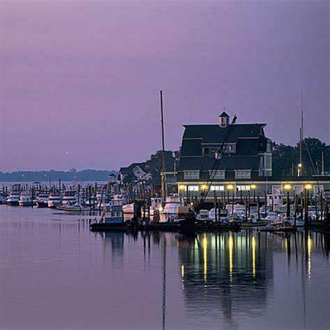

Norwalk is a U.S. city located in southwestern Connecticut, in southern Fairfield County, on the northern shore of Long Island Sound. Norwalk is included statistically within both the New York metropolitan area as well as the Bridgeport metropolitan area.
Norwalk was settled in 1649, and is now the sixth most populous city in Connecticut. According to the 2010 United States Census the city had a population of 85,603; with an estimated population of 88,438 in 2016.